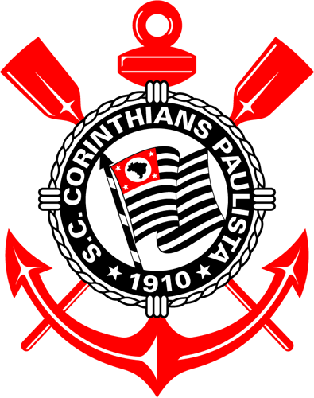

Campeonato Brasileiro
O primeiro título brasileiro do clube, conquistado diante do São Paulo.

Corinthians.FielGaleria de conquistas
Algumas das conquistas mais importantes do Sport Club Corinthians Paulista.
O primeiro título brasileiro do clube, conquistado diante do São Paulo.
Campeão da primeira edição do torneio mundial organizado pela FIFA.
Conquista nacional em uma campanha que teve Ronaldo como destaque.
Mais uma conquista brasileira, consolidando uma temporada marcante.
Vitória sobre o Chelsea e conquista do bicampeonato mundial.
Vitória que marcou o fim do jejum de 23 anos sem estadual.
Campeão invicto da Copa Libertadores da América pela primeira vez.